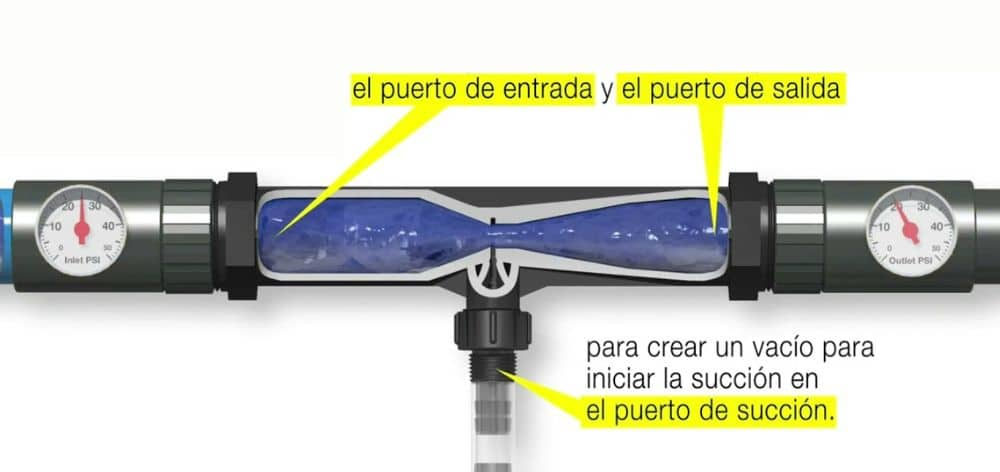
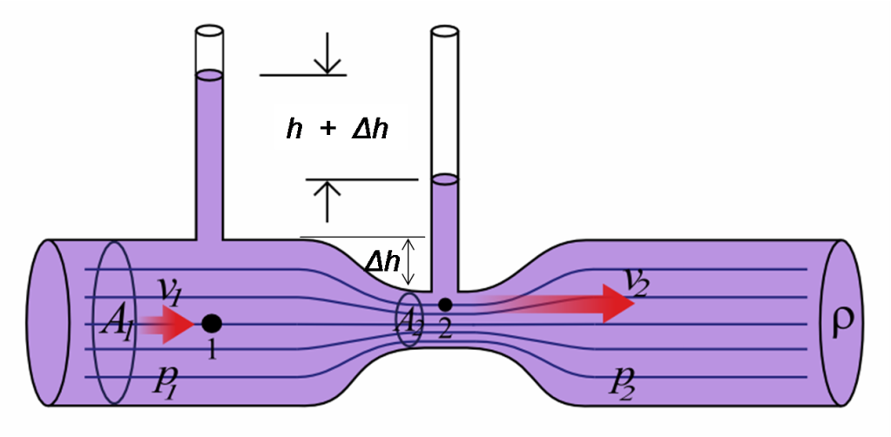

Baja presión disponible
Sistemas con apenas 0.1 a 0.2 kg/cm² de carga, insuficientes para que un inyector estándar genere succión.
Universidad Autónoma Chapingo · Departamento de Irrigación
Diseño, simulación CFD y aplicación en agricultura de precisión
La práctica agrícola que une, en un mismo flujo, el riego y la nutrición de los cultivos para aportar agua y fertilizantes de manera homogénea, oportuna y eficiente.
En México, gran parte del riego agrícola opera con multicompuertas y bajas cargas hidráulicas. Los equipos comerciales de inyección fallan cuando el diferencial de presión es muy pequeño.
Sistemas con apenas 0.1 a 0.2 kg/cm² de carga, insuficientes para que un inyector estándar genere succión.
Variaciones de presión a lo largo del día provocan mezclas desiguales y aplicaciones imprecisas.
Diseños no optimizados comprometen el funcionamiento de emisores finales y elevan costos operativos.
Las bombas dosificadoras requieren energía y mantenimiento, limitando su uso en parcelas remotas.
Analizar, diseñar y simular un inyector Venturi capaz de operar eficientemente en sistemas de fertirrigación de baja presión, sustentando su funcionamiento en los principios termodinámicos e hidráulicos.
El inyector Venturi opera bajo leyes deterministas de la mecánica de fluidos: la energía total a lo largo de la línea de corriente se conserva, sólo cambia de forma.
Para un fluido incompresible, la suma de la energía de presión, la energía cinética y la energía potencial permanece constante a lo largo de una línea de corriente.
Cuando un fluido motriz atraviesa una reducción de sección, su energía de presión se transforma en energía cinética: la velocidad aumenta y la presión estática disminuye.
Si la velocidad en la garganta es suficientemente alta, la presión estática cae por debajo de la presión atmosférica, generando un vacío parcial capaz de aspirar un segundo fluido por el puerto lateral.
Entrada → Garganta → Succión → Mezcla → Salida. La secuencia ocurre en milisegundos y sin partes móviles.
El flujo motriz ingresa a la zona convergente con presión estática P₁.
Reducción de área: la velocidad se dispara y la presión cae al mínimo.
El puerto lateral aspira el aditivo desde el tanque de fertilizante.
El difusor recupera presión y homogeneiza el fluido motriz con el aditivo.
La solución fertilizante se reintegra al sistema principal de riego.

La eficiencia no es producto del azar, sino de una geometría interna estrictamente calculada para minimizar la entropía del sistema.
Dimensionada según el flujo motriz disponible.
Aceleración gradual del fluido para evitar turbulencias prematuras.
Diámetro mínimo: punto crítico donde se genera la presión negativa.
Con válvula de retención (esfera de PTFE y resorte de Hastelloy C-22).
Sección de expansión para recuperar la presión estática.
La mezcla se reintegra al sistema principal de riego.
| Tipo de diseño | Ángulo convergente α | Ángulo divergente β | Aplicación técnica |
|---|---|---|---|
| Comercial estándar | 21° o 10.5° | 5° – 7° | Mazzei, Vicamp; propósitos generales. |
| Alta eficiencia | 7.5° | 5° | Optimización de energía; mínima pérdida de carga (Zárate). |
| Baja presión | 21° | 6° | Específico para multicompuertas (0.1 – 0.2 kg/cm²). |

Para fluidos no compresibles como el agua, se aplica la ecuación de descarga derivada de la conservación de la masa y la energía.
El reto técnico: que el inyector genere succión con un diferencial mínimo, donde los modelos comerciales fallan.
Sistema pasivo: no requiere bombas dosificadoras ni energía externa.
Geometría optimizada que respeta la presión disponible para los emisores aguas abajo.
Hasta el triple de los inyectores comerciales en condiciones difíciles.
Sin partes móviles internas: durabilidad y costo operativo mínimo.
Un inyector diseñado para las condiciones específicas del proyecto puede triplicar la eficiencia de los modelos comerciales, sobre todo en baja presión.
La ausencia de partes móviles y la independencia eléctrica convierten al Venturi en la solución de menor costo operativo para fertirrigación y aireación industrial.
Los ángulos convergente y divergente determinan la succión efectiva: el diseño 21°/6° optimiza la operación en escenarios de baja presión.
El sistema requiere un diferencial mínimo del 25-30% para iniciar succión y alcanza su rendimiento pico cuando el diferencial llega al 50%.
“La eficiencia hidráulica no es producto del azar, sino de una geometría estrictamente calculada para minimizar la entropía del sistema.”
Universidad Autónoma Chapingo · Departamento de Irrigación
Proyecto de Fertirrigación mediante Inyector Venturi · Termodinámica